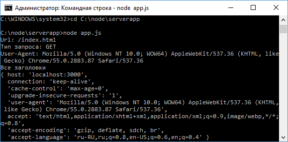

Создание сервера
Для работы с сервером и протоколом http в Node.js используется модуль http. Чтобы создать сервер, следует вызвать метод http.createServer():
const
http = require("http");
http.createServer().listen(3000);
Метод createServer() возвращает объект http.Server. Но чтобы сервер мог прослушивать и обрабатывать входящие подключения, у объекта сервера необходимо вызвать метод listen(), в который в качестве параметра передается номер порта, по которому запускается сервер. Для обработки подключений в метод createServer можно передать специальную функцию:
const
http = require("http");
http.createServer(function(request, response){
response.end("Hello world!");
}).listen(3000);
Эта функция принимает два параметра:
request: хранит информацию о
запросе
response: управляет отправкой
ответа
Request
Параметр request позволяет получить информацию о
запросе и представляет объект http.IncomingMessage. Отметим некоторые основные
свойства этого объекта:
headers: возвращает
заголовки запроса
method: тип запроса (GET,
POST, DELETE, PUT)
url: представляет
запрошенный адрес
Например, определим следующий файл app.js:
var
http = require("http");
http.createServer(function(request,
response){
console.log("Url: " + request.url);
console.log("Тип запроса: " +
request.method);
console.log("User-Agent: " +
request.headers["user-agent"]);
console.log("Все заголовки");
console.log(request.headers);
response.end();
}).listen(3000);
Запустим его и обратимся в браузере по адресу http://localhost:3000/index.html:
